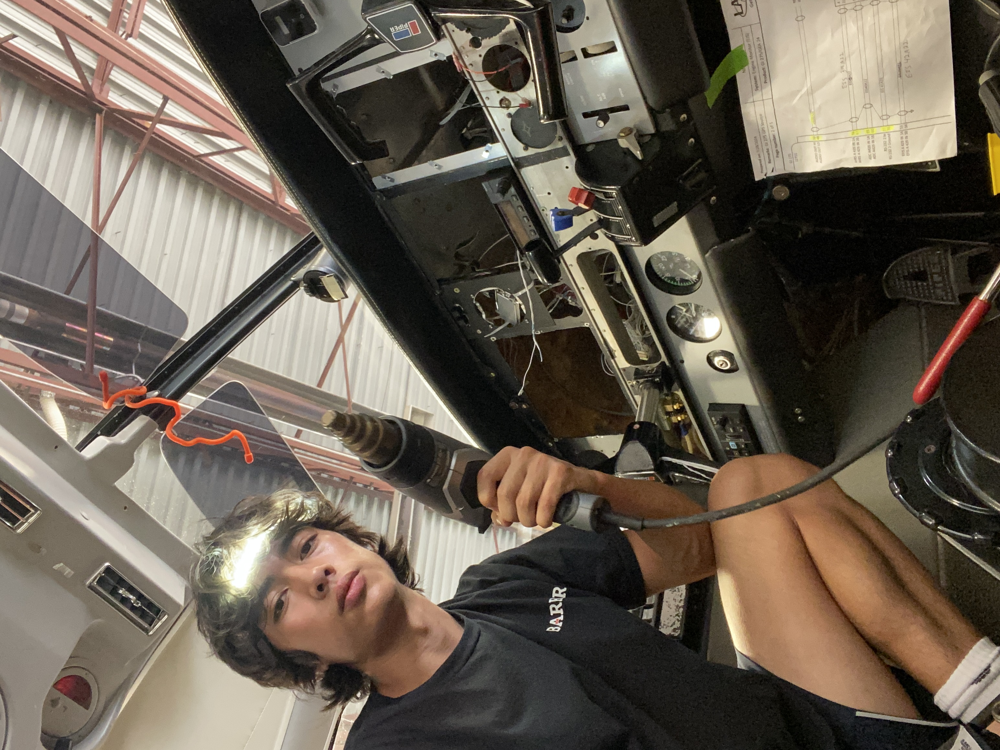
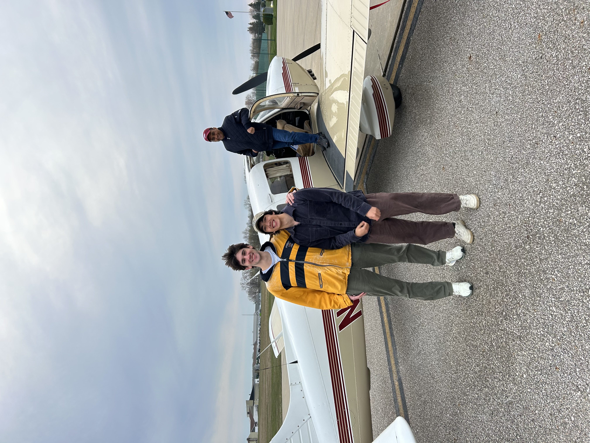
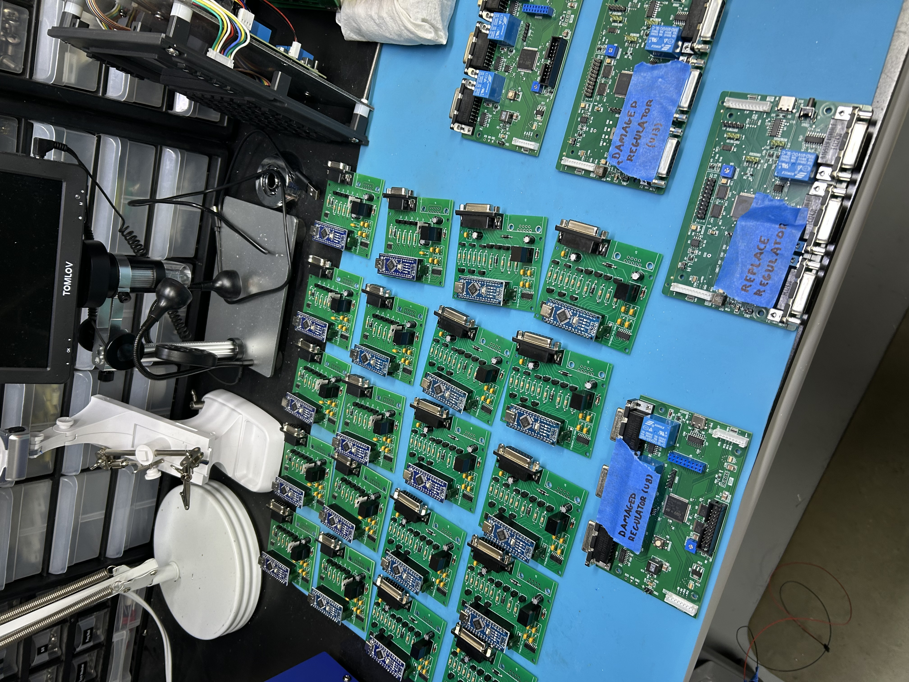
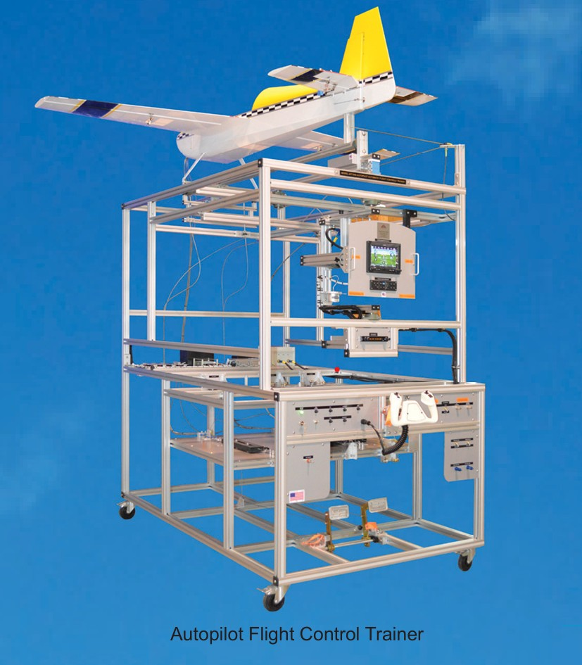
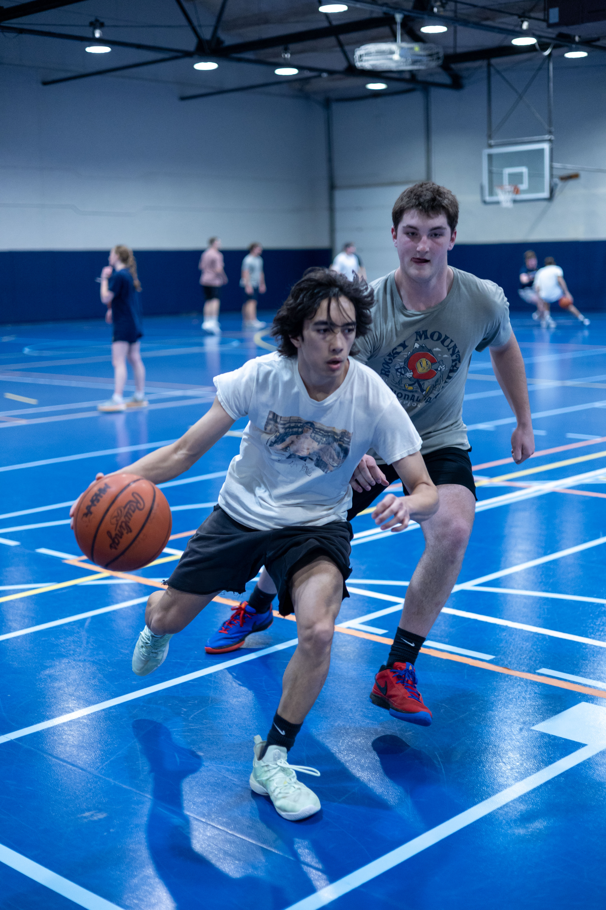
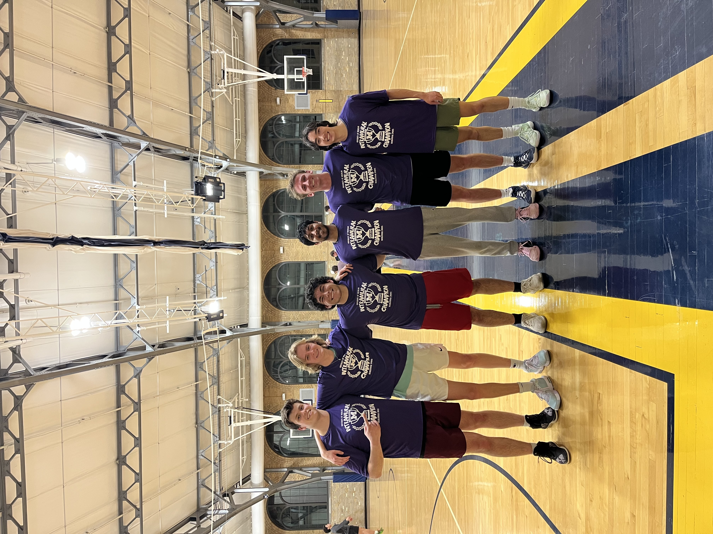
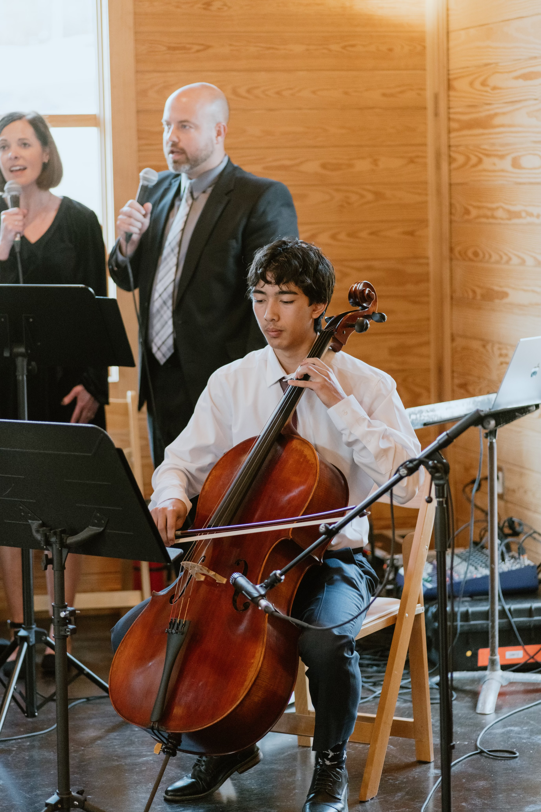
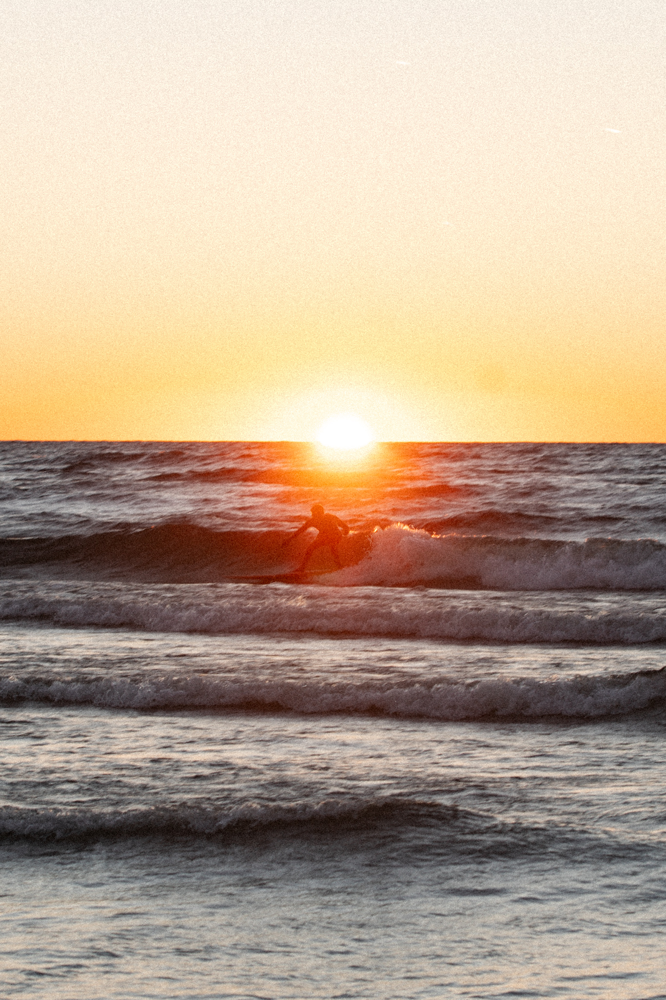
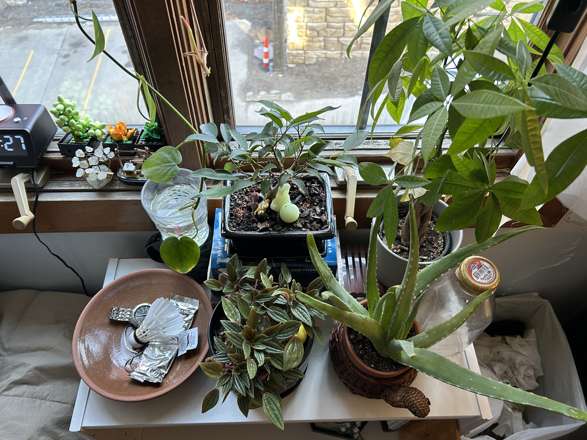
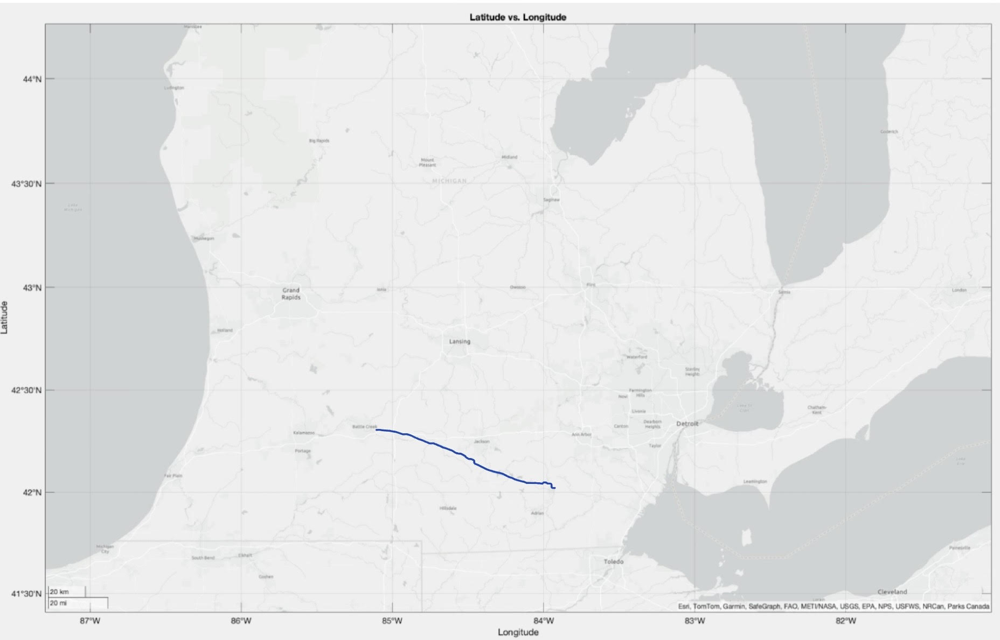

Hi! I'm Kyle. Welcome to my portfolio!
About Me


Hello! I'm a rising senior at the University of Michigan majoring in electrical engineering and minoring in computer science. As a proud product of the “played with Lego as a kid to engineering” pipeline, I can confidently say that I haven't lost the excitement of building, creating, and learning. My technical interests are in embedded systems and aviation, stemming from a variety of experiences including internships, project teams, and coursework. When my dad decided to pursue his pilot's license during COVID, I was given the privilege of sitting right seat for many flights. Those experiences sparked my own interest in aviation which I was able to exercise as an avionics wiring harness technician at Lapeer Aviation. My time at Lapeer Aviation was highlighted by participating in in-flight tests with pilots to verify the functionality of the wiring harnesses I had worked on.


As an engineering intern at AeroTrain, I gained hands-on experience with embedded systems, performing system-level testing on pilot training and flight simulation equipment, and debugged and assembled hundreds of PCBs. In my last month at AeroTrain, I was given a large role in the research and development of the redesign for an autopilot flight control trainer. Coming back from school the following semester, I joined the student project team Michigan Autonomous Aerial Vehicles, where I continued to develop my skills in PCB design, system integration, and collaborative problem-solving.Aside from my technical interests, I am passionate about many other things. I started learning the cello in elementary school, and my love and appreciation for the instrument has grown as I've had the opportunity to play for weddings, serve in my local church, and act as principal cello for the U of M Campus Strings Orchestra for a year. I also love doing anything outdoors, especially cold water surfing in Lake Michigan when the weather cooperates. Even when the waves are lackluster, any disappointment is quickly cured by the beauty of a Lake Michigan sunset enjoyed from the middle of the lake on a bobbing surfboard. Lastly, I enjoy playing basketball. I started in middle school and have played intramurals all three years I've been at university, including the awesome experience of winning an intramural championship in the 5 v 5 competitive league with my team this past year. The discipline I've shown in refining these skills, along with my willingness to learn from those better than me, are qualities I aim to carry into my professional work.





Projects
Automated Plant Watering System

Built a programmable plant watering system for my plants because I was tired of driving them back and forth from school.
See More >Carrier Board for Drone Fleet

Worked with a team (MAAV embedded systems team) to design a weight-optimized carrier board for a fleet of mine-detecting drones.
See More >Sensor Payload for Atmospheric Measurements

Collaborated with a team to design and deploy a sensor payload to an altitude of nearly 20 miles, successfully recovering atmospheric data for analysis.
See More >Contact
Email: kyledima@umich.edu
Phone: 248-466-8615